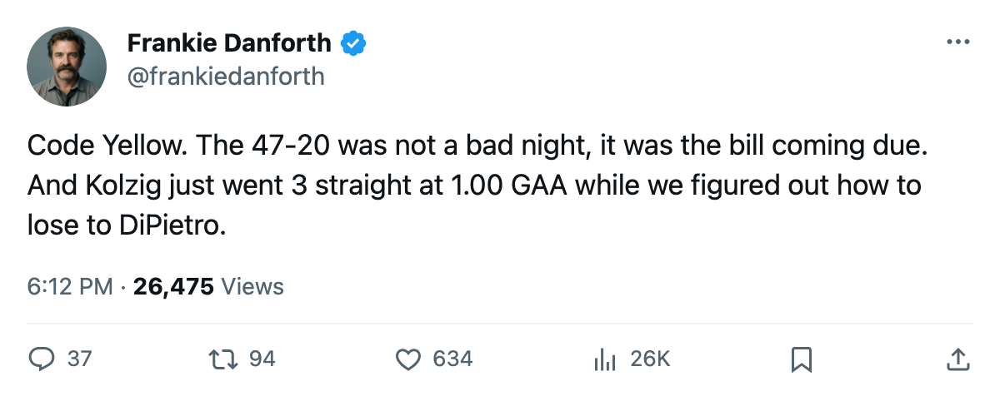
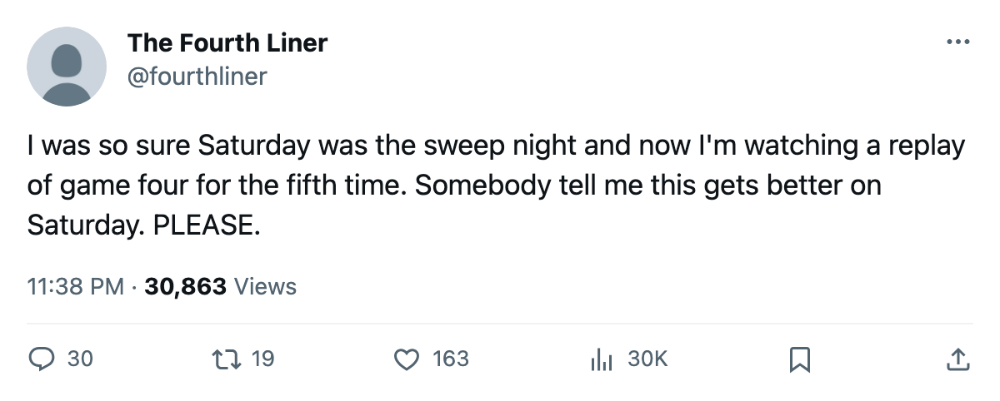

TOR
TORTHE PANIC METER, PLAYOFF EDITION: Code Yellow after the 47-20, and Kolzig's 1.00 waits on the other side of Saturday
Washington just finished a sweep and Toronto just got outshot by 27 in one game. The Round 2 that nobody believed would be this hard just arrived with a name on it.
 Frankie DanforthColumnist · Queen City Telegram
Frankie DanforthColumnist · Queen City Telegram
Code Yellow.
I was at Green on Monday. I am not at Green tonight. The 11-game regular-season win streak is dead, Game 4 of this first-round series belongs to a team that fired 47 pucks at our goaltender while we managed 20 back, and the prediction we filed saying Toronto would win Thursday is sitting in the miss column with a line through it. I own it. I also own the code change.
One loss up 3-0 in a series against the eighth seed is survivable. What put the code on yellow is that on the same Thursday,  Washington Capitals beat
Washington Capitals beat  Carolina Hurricanes 5-1 to finish a 3-0 sweep, and
Carolina Hurricanes 5-1 to finish a 3-0 sweep, and  Olaf Kolzig83 now carries a 1.00 goals-against average and a .955 save percentage across three playoff games. The Vezina from last spring is not a fluke in this building. He is what Toronto's first-round offense looks like if the shot rate flips against a goaltender who will not crack the way DiPietro's .866 did on Thursday.
Olaf Kolzig83 now carries a 1.00 goals-against average and a .955 save percentage across three playoff games. The Vezina from last spring is not a fluke in this building. He is what Toronto's first-round offense looks like if the shot rate flips against a goaltender who will not crack the way DiPietro's .866 did on Thursday.
The shot-rate problem, finally named
I have been counting this team's shot totals since October and I told you in March that 15 shots was still the number I keep. We shot 47 in Boston. We shot 44 in Game 3 of this series. The regular-season goal differential was 381-190 and that margin lives on volume. In Game 4, the volume disappeared. Twenty shots.
You cannot win a second-round series against Kolzig with 20 shots. You cannot win it with 30. Washington's  Jaromir Jagr84 has 7 assists in 3 playoff games without scoring a single goal, and Robert Lang has 4 goals and 1 assist in 3. That offense does not need volume. It needs one good shift and Kolzig stands on his head. We have seen what that looks like: three games, three wins, one goal against per sixty minutes.
Jaromir Jagr84 has 7 assists in 3 playoff games without scoring a single goal, and Robert Lang has 4 goals and 1 assist in 3. That offense does not need volume. It needs one good shift and Kolzig stands on his head. We have seen what that looks like: three games, three wins, one goal against per sixty minutes.
The goaltending question I keep asking
If Luongo's line breaks in Round 2, who goes? Ed Belfour has 37 games at $6.50M and has not dressed in the playoffs. Mikael Tellqvist73 sits at 73 overall, three below his Book base, and the Development Index has him at -3 form. The bench in a Game 7 against a 1.00 GAA would be Tellqvist.
I do not have the answer. The general manager has not made one. That was true at the trade deadline and it is true on 2005-04-15 with a sweep almost complete.
What Saturday decides
One win and we play Washington. I have been writing about the second-centre problem since October and the calendar took the trade deadline 27 days ago without a phone call. Petr Chlup87 answered that question with 33 goals at 19. Good. It will not be enough if the volume vanishes again.
Game 5. The building. Close it out, because the next one starts with a Vezina Trophy winner staring back from the other crease.

